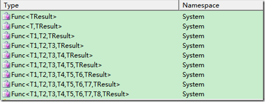
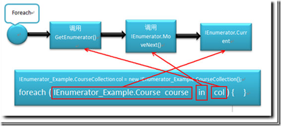
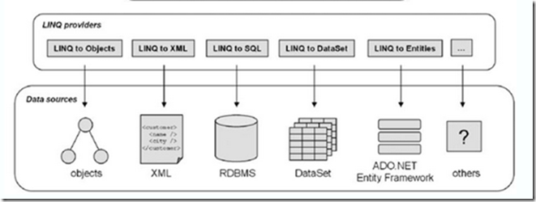
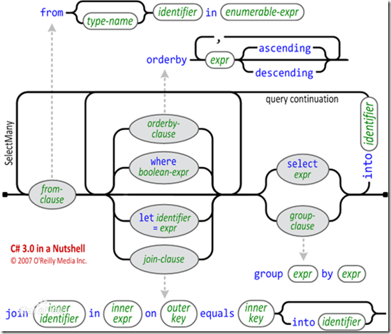
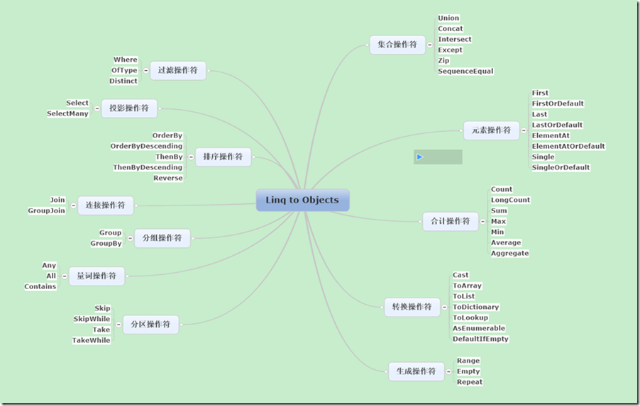
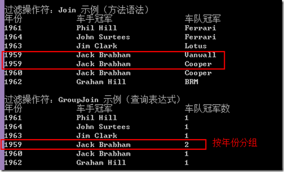
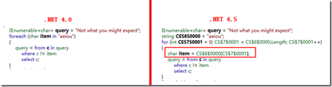
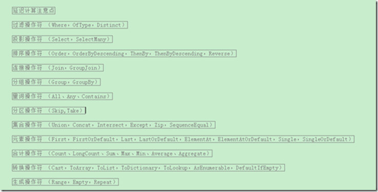

created by xyzko1
2019年07月21日 19:00:00
本博文详细介绍 .NET 3.5 中引入的重要功能：Language Integrated Query（LINQ，语言集成查询）。通过LINQ，我们可以使用相同API操作不同的数据源。接下来就让我们看看LINQ是什么以及如何使用？
相关技术
隐式类型、匿名类型、对象初始化器
隐式类型
使用var关键字创建，C#编译器会根据用于初始化局部变量的初始值推断出变量的数据类型。（不过我个人认为，能用具体类型的地方尽量不要用var关键字，因为这样会让你遗忘“被封装类库”方法的返回值类型–有损可读性）
隐式类型使用限制：
a) 隐式类型只能应用于方法或者属性内局部变量的声明，不能使用var来定义返回值、参数的类型或类型的数据成员。
b) 使用var进行声明的局部变量必须赋初始值，并且不能以null作为初始值。
匿名类型
只是一个继承了Object的、没有名称的类。C#编译器会在编译时自动生成名称唯一的类。
对象初始化器
提供一种非常简洁的方式来创建对象和为对象的属性赋值。（相关还有“集合初始化器”）
由于C#强类型语言，即我们在声明变量时必须指定变量的具体类型。所以在创建匿名对象时，需要结合隐式类型、匿名类型、对象初始化器一起创建匿名对象。（避免类型转换）
示例：
var person = new { name = “heyuquan” , age = 24 }
Lambda表达式，Func委托
Lambda表达式只是用更简单的方式来书写匿名方法，从而彻底简化.NET委托类型的使用。
Lambda表达式在C#中的写法是“arg-list => expr-body”，“=>”符号左边为表达式的参数列表，右边则是表达式体（body）。参数列表可以包含0到多个参数，参数之间使用逗号分割。
Func委托
Func委托，是微软为我们预定义的常用委托，封装一个具有：零个或多个指定类型的输入参数并返回一个指定类型的结果值的方法。

示例：
1 | static void Main(string[] args) { // 委托函数 Func<string, string, string> func1 = Hello; // 匿名方法 Func<string, string, string> func2 = delegate(string a, string b) { return "欢迎光临我的博客" + Environment.NewLine + a + " " + b; }; // Lambda表达式 Func<string, string, string> func3 = (a, b) => { return "欢迎光临我的博客" + Environment.NewLine + a + " " + b; }; // 调用Func委托 string helloStr = func2("滴答的雨", @"http://www.cnblogs.com/heyuquan/"); Console.WriteLine(helloStr);} static string Hello(string a, string b) { return "欢迎光临我的博客" + Environment.NewLine + a + " " + b; } |
扩展方法
1、 扩展方法声明在静态类中，定义为一个静态方法，其第一个参数需要使用this关键字标识，指示它所扩展的类型。
2、扩展方法可以将方法写入最初没有提供该方法的类中。还可以把方法添加到实现某个接口的任何类中，这样多个类就可以使用相同的实现代码。（LINQ中，System.Linq.Queryable.cs和System.Linq.Enumerable.cs 正是对接口添加扩展方法）
3、扩展方法虽定义为一个静态方法，但其调用时不必提供定义静态方法的类名，只需引入对应的命名空间，访问方式同实例方法。
4、扩展方法不能访问它所扩展的类型的私有成员。
示例：
1 | public static IEnumerable<TSource> MyWhere<TSource>( this IEnumerable<TSource> source, Func<TSource, bool> predicate){ foreach (TSource item in source) { if (predicate(item)) yield return item; }} |
Yield迭代器，延迟计算
Yield迭代器
在上面定义的MyWhere扩展方法中，我们使用了yield迭代器。使我们不必“显示”实现IEnumerable或IEnumerator接口。只需要简单的使用 yield 关键字，由 JIT 编译器帮我们编译成实现 IEnumerable或IEnumerator 接口的对象（即：本质还是传统遍历，只是写法上非常简洁），就能使用foreach进行遍历。
请详看：《C#稳固基础：传统遍历与迭代器》，通过这篇博文我们可以学会如何实现foreach遍历以及foreach执行遍历的详细过程如下图所示：

延迟计算（Lazy evaluation）
a) 定义：来源自函数式编程，在函数式编程里，将函数作为参数来传递，传递过程中不会执行函数内部耗时的计算，直到需要这个计算结果的时候才调用，这样就可以因为避免一些不必要的计算而改进性能。
b) Yield迭代器的延迟计算原理：JIT 编译器会帮助我们将迭代主体编译到IEnumerator.MoveNext()方法中。从上图foreach的执行流程来看，迭代主体是在每次遍历执行到 in的时候才会调用MoveNext()，所以其迭代器耗时的指令是延迟计算的。
c) LINQ查询的延迟计算原理：通过给LINQ扩展方法传递方法委托，作为yield迭代器的主体，让遍历执行到MoveNext()时才执行耗时的指令。
表达式树
表达式树：表达式树允许在运行期间建立对数据源的查询，因为表达式树存储在程序集中。（后续在Linq to entities博文中与Queryable一起解说）
Language Integrated Query（LINQ，语言集成查询）

从这幅图中，我们可以知道LINQ包括五个部分：LINQ to Objects、LINQ to XML、LINQ to SQL、LINQ to DataSet、LINQ to Entities。
| 程序集 | 命名空间 | 描述 | |
|---|---|---|---|
| LINQ to Objects | System.Core.dll | System.Linq | 提供对内存中集合操作的支持 |
| LINQ to XML | System.Xml.Linq.dll | System.Xml.Linq | 提供对XML数据源的操作的支持 |
| LINQ to SQL | System.Data.Linq.dll | System.Data.Linq | 提供对Sql Server数据源操作的支持。（微软已宣布不再更新，推荐使用LINQ to Entities） |
| LINQ to DataSet | System.Data.DataSetExtensions.dll | System.Data | 提供对离线数据操作的支持。 |
| LINQ to Entities | System.Core.dll 和System.Data.Entity.dll | System.Linq 和System.Data.Objects | LINQ to Entities 是 Entity Framework 的一部分并且取代LINQ to SQL 作为在数据库上使用 LINQ 的标准机制。（Entity Framework 是由微软发布的开源对象-关系映射（ORM）框架，支持多种数据库。） |
目前，还可以下载其他第三方提供程序，例如LINQ to JSON、LINQ to MySQL、LINQ to Amazon、LINQ to Flickr和LINQ to SharePoint。无论使用什么数据源，都可以通过LINQ使用相同的API进行操作。
怎样区分LINQ操作时，使用的是哪个LINQ提供程序？
LINQ提供程序的实现方案是：根据命名空间和第一个参数的类型来选择的。实现扩展方法的类的命名空间必须是打开的，否则扩展类就不在作用域内。Eg：在LINQ to Objects中定义的 Where() 方法参数和在 LINQ to Entities中定义的 Where() 方法实现是不同。
1 | // LINQ to Objects：public static class Enumerable{ public static IEnumerable<TSource> Where<TSource>( this IEnumerable<TSource> source, Func<TSource, bool> predicate);} // LINQ to Entitiespublic static class Queryable{ public static IQueryable<TSource> Where<TSource>( this IQueryable<TSource> source, Expression<Func<TSource, bool>> predicate);} |
LINQ查询提供几种操作语法？
LINQ查询时有两种语法可供选择：查询表达式（Query Expression）和方法语法（Fluent Syntax）。
.NET公共语言运行库（CLR）并不具有查询表达式的概念。所以，编译器会在程序编译时把查询表达式转换为方法语法，即对扩展方法的调用。所以使用方法语法会让我们更加接近和了解LINQ的实现和本质，并且一些查询只能表示为方法调用。但另一方面，查询表达式通常会比较简单和易读。不管怎样，这两种语法是互相补充和兼容的，我们可以在一个查询中混合使用查询表达式和方法语法。
以下扩展方法存在对应的查询表达式关键字：Where、Select、SelectMany、OrderBy、ThenBy、OrderByDescending、ThenByDescending、GroupBy、Join、GroupJoin。
LINQ查询表达式
| 约束 | LINQ查询表达式必须以from子句开头，以select或group子句结束。 |
|---|---|
| 关键字 | 功能 |
| from…in… | 指定要查找的数据源以及范围变量，多个from子句则表示从多个数据源查找数据。注意：c#编译器会把“复合from子句”的查询表达式转换为SelectMany()扩展方法。 |
| join…in…on…equals… | 指定多个数据源的关联方式 |
| let | 引入用于存储查询表达式中子表达式结果的范围变量。通常能达到层次感会更好，使代码更易于阅读。 |
| orderby、descending | 指定元素的排序字段和排序方式。当有多个排序字段时，由字段顺序确定主次关系，可指定升序和降序两种排序方式 |
| where | 指定元素的筛选条件。多个where子句则表示了并列条件，必须全部都满足才能入选。每个where子句可以使用谓词&&、 |
| group | 指定元素的分组字段。 |
| select | 指定查询要返回的目标数据，可以指定任何类型，甚至是匿名类型。（目前通常被指定为匿名类型） |
| into | 提供一个临时的标识符。该标识可以引用join、group和select子句的结果。1) 直接出现在join子句之后的into关键字会被翻译为GroupJoin。（into之前的查询变量可以继续使用）2) select或group子句之后的into它会重新开始一个查询，让我们可以继续引入where, orderby和select子句，它是对分步构建查询表达式的一种简写方式。（into之前的查询变量都不可再使用） |
书写模版如下：

下面以 LINQ to Objects 为例，介绍LINQ中的各种查询。
LINQ to Objects
LINQ to Objects 提供对内存中集合操作的支持，由程序集System.Core.dll中System.Linq命名空间下的Enumerable静态类提供。
运算符图解：

示例业务背景介绍
示例参考《C#高级编程（第六版）》LINQ章节（P267 - P296），进行改编。
打开示例代码我们看到：
![avatar]6.png)
1.Racer.cs 文件，定义一级方程式世界车手冠军信息。
2.Team.cs 文件，定义一级方程式世界车队冠军信息。
3.Formula1.cs 文件，包含两个重要静态方法：（F1是"Formula One"的缩写）
- GetChampions()：返回一组车手列表。这个列表包含了1950到2007年之间的所有一级方程式世界车手冠军。
- GetContructorChampions()：返回一组车队列表。这个列表包含了1985到2007年之间的所有一级方程式世界车队冠军，车队冠军是从1985年开始设立的（是由国际汽车联合会颁发给一个赛季内最成功的一级方程式车队的奖励）。
各种LINQ示例
过滤操作符
根据条件返回匹配元素的集合IEnumerable
1、Where：根据返回bool值的Func委托参数过滤元素。
业务说明：查询获得车手冠军次数大于15次且是Austria国家的一级方程式赛手
1 | // 查询表达式 var racer = from r in Formula1.GetChampions() |
2、OfType
业务说明：过滤object数组中的元素，返回字符串类型的数组。
1 | object[] = { "one", 2, 3, "four", "five", 6 }; |
3、 Distinct：删除序列中重复的元素。
投影操作符
1、Select 将序列的每个元素经过lambda表达式处理后投影到一个新类型元素上。（与SelectMany不同在于，若单个元素投影到IEnumerable
API：
1 | public static IEnumerable<TResult> Select<TSource, TResult> |
2、SelectMany
a) c#编译器会把“复合from子句”的查询表达式转换为SelectMany()扩展方法。
b) 将序列的每个元素经过lambda表达式处理后投影到一个 IEnumerable
1 | public static IEnumerable<TResult> SelectMany<TSource, TResult> |
c) 将序列的每个元素经过lambda表达式处理后投影到一个 IEnumerable
1 | public static IEnumerable<TResult> SelectMany<TSource,TCollection,TResult>(this IEnumerable<TSource> source,Func<TSource, IEnumerable<TCollection>> collectionSelector,Func<TSource,TCollection,TResult> resultSelector); |
示例：
业务说明：（Racer类定义了一个属性Cars，Cars是一个字符串数组。）过滤驾驶Ferrari的所有冠军
1 | // 查询表达式 var ferrariDrivers = from r in Formula1.GetChampions() |
排序操作符
1、 OrderBy<TSource,TKey>，OrderByDescending<TSource,TKey>：根据指定键按升序或降序对集合进行第一次排序，输出IOrderedEnumerable
2、ThenBy<TSource,TKey>，ThenByDescending<TSource,TKey>：只会对那些在前一次排序中拥有相同键值的elements重新根据指定键按升序或降序排序。输入IOrderedEnumerable
业务说明：获取车手冠军列表，并依次按照Country升序、LastName降序、FirstName升序进行排序。
1 | // 查询表达式 var racers = from r in Formula1.GetChampions() |
3、Reverse
连接操作符
先准备两个集合，如下：（racers表示在1958到1965年间获得车手冠军的信息列表；teams表示在1958到1965年间获得车队冠军的信息列表）
1 | var racers = from r in Formula1.GetChampions() |
注意：join…on…关键字后的相等使用equals关键字。
1、Join：基于匹配键对两个序列的元素进行关联。
API:g
1 | public static IEnumerable<TResult> Join<TOuter, TInner, TKey, TResult>(this IEnumerable<TOuter> outer,IEnumerable<TInner> inner,Func<TOuter, TKey> outerKeySelector,Func<TInner, TKey> innerKeySelector,Func<TOuter, TInner,TResult> resultSelector); |
业务说明：返回1958到1965年间的车手冠军和车队冠军信息，根据年份关联
1 | // 查询表达式var racersAndTeams = from r in racers |
2、GroupJoin：基于键相等对两个序列的元素进行关联并对结果进行分组。常应用于返回“主键对象-外键对象集合”形式的查询。
API：
1 | public static IEnumerable<TResult> GroupJoin<TOuter, TInner, TKey, TResult>(this IEnumerable<TOuter> outer,IEnumerable<TInner> inner,Func<TOuter, TKey> outerKeySelector,Func<TInner, TKey> innerKeySelector,Func<TOuter, IEnumerable<TInner>, TResult>resultSelector); |
业务说明：返回1958到1965年间的车手冠军和车队冠军信息，根据年份关联并分组
注意：直接出现在join子句之后的into关键字会被翻译为GroupJoin，而在select或group子句之后的into表示继续一个查询。
1 | // 查询表达式 var racersAndTeams = from r in racers |
3、join…on…equals…支持多个键关联
可以使用匿名类型来对多个键值进行Join，如下所示：
1 | from x in sequenceX |
两个匿名类型的结构必须完全一致，这样编译器会把它们对应到同一个实现类型，从而使连接键值彼此兼容。
4、 Join与GroupJoin结果集对比（为了实现此业务，将1959年设置了两个车队冠军）

分组操作符
1、返回值为 IEnumerable<IGrouping<TKey, TSource>> ，根据指定的键选择器函数对序列中的元素进行分组。
业务说明：按城市分组，获取每个城市的车手冠军。
1 | // 查询表达式 var countries = from r in Formula1.GetChampions() |
2、返回值为 IEnumerable
业务说明：按城市分组，获取每个城市的车手冠军。
1 | // 方法语法 （等价上面两种方式） |
量词操作符
如果元素序列满足指定的条件，量词操作符就返回布尔值。
1、Any：确定序列是否包含任何元素；或确定序列中的任何元素是否都满足条件。
2、All：确定序列中的所有元素是否满足条件。
3、Contains：确定序列是否包含指定的元素。
1 | // 获取是否存在姓为“Schumacher”的车手冠军 |
分区操作符
添加在查询的“最后”，返回集合的一个子集。
1、Take：从序列的开头返回指定数量的连续元素。
2、TakeWhile：只要满足指定的条件，就会返回序列的元素。
3、Skip：跳过序列中指定数量的元素，然后返回剩余的元素。
4、 SkipWhile：只要满足指定的条件，就跳过序列中的元素，然后返回剩余元素。
业务说明：将车手冠军列表按每页5个名字进行分页。
1 | private static void Paging(){ |
集合操作符
1、Union：并集，返回两个序列的并集，去掉重复元素。
2、Concat：并集，返回两个序列的并集。
3、 Intersect：交集，返回两个序列中都有的元素，即交集。
4、 Except：差集，返回只出现在一个序列中的元素，即差集。
业务说明：获取使用车型”Ferrari”和车型”Mclaren”都获得过车手冠军车手列表
1 | Func<string, IEnumerable<Racer>> racersByCar=Car=>from r in Formula1.GetChampions() |
5、Zip：通过使用指定的委托函数合并两个序列，集合的总个数不变。
API：
1 | public static IEnumerable<TResult> Zip<TFirst, TSecond, TResult>(this IEnumerable<TFirst> first,IEnumerable<TSecond> second,Func<TFirst,TSecond,TResult>resultSelector); |
示例：合并html开始标签和结束标签
1 | string[] start = {"<html>","<head>","<body>" }; |
6、SequenceEqual：判断两个序列是否相等，需要内容及顺序都相等。
示例：
1 | int[] arr1 = { 1, 4, 7, 9 }; |
元素操作符
这些元素操作符仅返回一个元素，不是IEnumerable
1、First：返回序列中的第一个元素；如果是空序列，此方法将引发异常。
2、FirstOrDefault：返回序列中的第一个元素；如果是空序列，则返回默认值default(TSource)。
3、Last：返回序列的最后一个元素；如果是空序列，此方法将引发异常。
4、LastOrDefault：返回序列中的最后一个元素；如果是空序列，则返回默认值default(TSource)。
5、Single：返回序列的唯一元素；如果是空序列或序列包含多个元素，此方法将引发异常。
6、SingleOrDefault：返回序列中的唯一元素；如果是空序列，则返回默认值default(TSource)；如果该序列包含多个元素，此方法将引发异常。
7、 ElementAt：返回序列中指定索引处的元素，索引从0开始；如果索引超出范围，此方法将引发异常。
8、 ElementAtOrDefault：返回序列中指定索引处的元素，索引从0开始；如果索引超出范围，则返回默认值default(TSource)。
业务说明：获取冠军数排名第三的车手冠军
1 | var Racer3 = Formula1.GetChampions() |
合计操作符
1、Count：返回一个 System.Int32，表示序列中的元素的总数量。
2、LongCount：返回一个 System.Int64，表示序列中的元素的总数量。
3、Sum：计算序列中元素值的总和。
4、Max：返回序列中的最大值。
5、Min：返回序列中的最小值。
6、 Average：计算序列的平均值。
7、Aggregate：对序列应用累加器函数。
Aggregate比较复杂，所以只列出Aggregate示例。
Aggregate的第一个参数是算法的种子，即初始值。第二个参数是一个表达式，用来对每个元素进行计算（委托第一个参数是累加变量，第二个参数当前项）。第三个参数是一个表达式，用来对最终结果进行数据转换。
1 | int[] numbers = { 1, 2, 3 };// 1+2+3 = 6 |
- 转换操作符
1、Cast：将非泛型的 IEnumerable 集合元素转换为指定的泛型类型，若类型转换失败则抛出异常。
2、 ToArray：从 IEnumerable创建一个数组。
3、ToList：从 IEnumerable创建一个 List 。
4、ToDictionary：根据指定的键选择器函数，从 IEnumerable创建一个 Dictionary<TKey,TValue>。
5、 ToLookup：根据指定的键选择器函数，从 IEnumerable创建一个 System.Linq.Lookup<TKey,TElement>。
6、 DefaultIfEmpty：返回指定序列的元素；如果序列为空，则返回包含类型参数的默认值的单一元素集合。
Eg:
1 | var defaultArrCount = (new int[0]).DefaultIfEmpty().Count(); // 1 |
7、AsEnumerable：返回类型为 IEnumerable
ToLookup使用比较复杂，所以以ToLookup为示例。
Lookup类似于Dictionary，不过，Dictionary每个键只对应一个值，而Lookup则是1：n 的映射。Lookup没有公共构造函数，而且是不可变的。在创建Lookup之后，不能添加或删除其中的元素或键。（可以将ToLookup 视为GroupBy与ToDictionary的功能合体）
API：
1 | public static ILookup<TKey, TElement> ToLookup<TSource, TKey, TElement>( this IEnumerable<TSource> source,Func<TSource, TKey> keySelector,Func<TSource, TElement> elementSelector); |
业务说明：将车手冠军按其使用车型进行分组，并显示使用”williams”车型的车手名字。
1 | ILookup<string, Racer>racers=(from r in Formula1.GetChampions() |
生成操作符
生成操作符返回一个新的集合。（三个生成操作符不是扩展方法，而是返回序列的正常静态方法）
1、Empty：生成一个具有指定类型参数的空序列 IEnumerable
2、Range：生成指定范围内的整数的序列 IEnumerable
3、Repeat：生成包含一个重复值的序列 IEnumerable
API：
1 | public static IEnumerable<TResult> Empty<TResult>(); |
Linq to Objects中的延迟计算
Linq查询的延迟计算原理：通过给LINQ扩展方法传递方法委托，作为yield迭代器的主体，让遍历执行到MoveNext()时才执行耗时的指令。
Linq延迟计算的注意点
1 | IEnumerable<char> query = "Not what you might expect";foreach (char item in "aeiou") query = query.Where(c => c != item);// 只删除了'u'----Not what yo might expect foreach (char c in query) Console.Write(c); |
我们原本的期望结果是：删除掉字符串中所有的原音字母。但现在只删除’u’，因为item变量是循环外部声明的，同一个变量重复声明更新，所以结束当前循环时，item记录的是循环最后一个值，即结束当前循环后再执行的lambda表达式引用item值为’u’。（注意 .NET4.5 对这一实现有变动，后面有介绍）
为了解决这个问题，必须将循环变量赋值到一个在循环代码块内声明的变量：
1 | IEnumerable<char> query1 = "Not what you might expect"; |
园友 @JulioZou 反馈了一个问题，上面延迟计算的示例在.NET4.5环境下两段代码最后输出都是：“Nt wht y mght xpct”。现在看下原因：
从Reflector工具看对于代码段一两者的编译情况是不一样的：

即，.NET 4.5会自己生成一个内部循环变量。更详细的分析可见《关于foreach语句在C#4.5中的改进》
所以演示延迟计算，可通过此段代码进行说明：
1 | IEnumerable<char> query = "Not what you might expect"; |
-
整理Linq to Objects中运算符延迟计算特性
按字母顺序整理：
| 具有延迟计算的运算符 | Cast，Concat，DefaultIfEmpty，Distinct，Except，GroupBy，GroupJoin，Intersect ，Join，OfType，OrderBy，OrderByDescending，Repeat，Reverse，Select，SelectMany，Skip，SkipWhile，Take，TakeWhile，ThenBy，ThenByDescending，Union，Where，Zip |
|---|---|
| 立即执行的运算符 | Aggregate，All，Any，Average，Contains，Count，ElementAt，ElementAtOrDefault ，Empty，First，FirstOrDefault，Last，LastOrDefault，LongCount，Max，Min，Range ，SequenceEqual，Single，SingleOrDefault，Sum，ToArray，ToDictionary，ToList，ToLookup |
特殊的AsEnumerable运算符，用于处理LINQ to Entities操作远程数据源，将IQueryable远程数据立即转化为本地的IEnumerable集合。若AsEnumerable接收参数是IEnumerable内存集合则什么都不做。
示例代码截图：（已在文章开头提供下载连接）

本博文就到此结束了，通过本博文，我们学会什么是LINQ查询、LINQ中涉及的.NET基础知识、LINQ中各种运算符、延迟计算等等……
Please Star this Project if you like it! Follow would also be appreciated!
Peace!